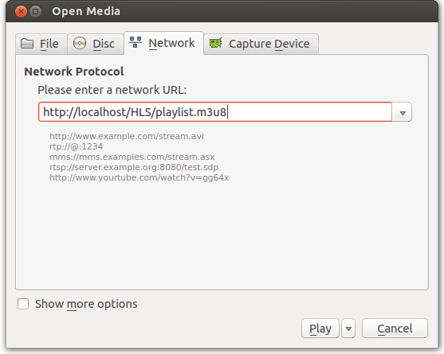

FFMpeg Http Live Streaming - 2017
In this section, we'll setup Apache server with Ubuntu 13.04. Then, do http live streaming via localhost.
sudo apt-get install apache2
To make .htaccess files work as expected, you need to edit this file:
/etc/apache2/sites-available/default
Look for a section that looks like this:
<Directory /var/www/>
Options Indexes FollowSymLinks MultiViews
AllowOverride None
Order allow,deny
allow from all
# Uncomment this directive is you want to see apache2's
# default start page (in /apache2-default) when you go to /
#RedirectMatch ^/$ /apache2-default/
</Directory>
You need to modify the line containing AllowOverride None to read AllowOverride All. This tells Apache that it's okay to allow .htaccess files to over-ride previous directives. You must reload Apache before this change will have an effect:
sudo /etc/init.d/apache2 reload
To find out where can we locate a file:
We need to modify /etc/apache2/mods-available/mime.conf
AddType application/x-mpegURL .m3u8 AddType video/MP2T .ts
Restart the server:
sudo /etc/init.d/apache2 reload
The best site as a reference of compiling ffmpeg on Ubuntu is Ubuntu Compilation Guide.
More general info on ffmpeg is available at https://trac.ffmpeg.org/.
In general, installing ffmpeg supposed to be straight forward. However, there could be couple of issues that keep us from successful installation at the first shot. Those could be:
- Failed to follow the steps in the Ubuntu Compilation Guide. Supposed to be in order due to the dependencies and the env. variable settings. For example, in yasm, we setup the build directory and usr's bin directory:
./configure --prefix="$HOME/ffmpeg_build" --bindir="$HOME/bin"
- Forgot to remove already installed old packages which may cause dependency or compatiblity issue.
- Combining above two may lead all sorts of issues: compilation or load/link error etc.
- So, whatever the reason that happens, we need to step back and start it over after a few unsuccessful tries.
To remove any existing packages:
rm -rf ~/ffmpeg_build ~/ffmpeg_sources ~/bin/{ffmpeg,ffprobe,ffserver,vsyasm,x264,yasm,ytasm}
sudo apt-get autoremove autoconf automake build-essential git libass-dev libgpac-dev \
libmp3lame-dev libopus-dev libsdl1.2-dev libtheora-dev libtool libva-dev libvdpau-dev \
libvorbis-dev libvpx-dev libx11-dev libxext-dev libxfixes-dev texi2html zlib1g-dev
hash -r
To get the dependencies:
sudo apt-get update sudo apt-get -y install build-essential checkinstall git libfaac-dev libgpac-dev \ libjack-jackd2-dev libmp3lame-dev libopencore-amrnb-dev libopencore-amrwb-dev \ librtmp-dev libsdl1.2-dev libtheora-dev libva-dev libvdpau-dev libvorbis-dev \ libx11-dev libxfixes-dev pkg-config texi2html yasm zlib1g-dev
So, we can compile any libraries we need following the guide from the ffmpeg.org.
However, there might be some issues such as this:
Unknown encoder 'libx264'
If that's the case, we need to check if the library has been enabled using ffmpeg command:
$ ffmpeg
ffmpeg version git-2013-10-26-7e19c54 Copyright (c) 2000-2013 the FFmpeg developers
built on Oct 26 2013 12:54:39 with gcc 4.7 (Ubuntu/Linaro 4.7.3-1ubuntu1)
configuration: --prefix=/home/khong/ffmpeg_build --extra-ldflags=-L/home/khong/ffmpeg_build/lib --bindir=/home/khong/bin --extra-libs=-ldl --enable-gpl --enable-libfaac --enable-libfdk-aac --enable-libx264 --enable-nonfree
libavutil 52. 47.101 / 52. 47.101
libavcodec 55. 38.101 / 55. 38.101
libavformat 55. 19.104 / 55. 19.104
libavdevice 55. 5.100 / 55. 5.100
libavfilter 3. 89.100 / 3. 89.100
libswscale 2. 5.101 / 2. 5.101
libswresample 0. 17.104 / 0. 17.104
libpostproc 52. 3.100 / 52. 3.100
Hyper fast Audio and Video encoder
usage: ffmpeg [options] [[infile options] -i infile]... {[outfile options] outfile}...
Use -h to get full help or, even better, run 'man ffmpeg'
The configuration line should be displayed there, and we can check the libx264 has been enabled.
If that's not the case, then, I would recommend breaking up the configure line and check if it works. For example, in the sample given by the guide:
mkdir ~/ffmpeg_sources cd ~/ffmpeg_sources git clone --depth 1 git://source.ffmpeg.org/ffmpeg cd ffmpeg PKG_CONFIG_PATH="$HOME/ffmpeg_build/lib/pkgconfig" export PKG_CONFIG_PATH ./configure --prefix="$HOME/ffmpeg_build" \ --extra-cflags="-I$HOME/ffmpeg_build/include" --extra-ldflags="-L$HOME/ffmpeg_build/lib" \ --bindir="$HOME/bin" --extra-libs="-ldl" --enable-gpl --enable-libass --enable-libfdk-aac \ --enable-libmp3lame --enable-libopus --enable-libtheora --enable-libvorbis --enable-libvpx \ --enable-libx264 --enable-nonfree --enable-x11grab --enable-libfaac make make install make distclean hash -r
We do not have to enable a library we're not using, so drop it from the configure and carefully monitor each step of compilation.
Actually, I used the following for my configuration:
$ ./configure --prefix=/home/khong/ffmpeg_build \ --extra-ldflags=-L/home/khong/ffmpeg_build/lib \ --bindir=/home/khong/bin --extra-libs=-ldl --enable-gpl \ --enable-libfaac --enable-libfdk-aac --enable-libx264 \ --enable-nonfree $ make $ sudo make install
ffmpeg basic stream segmenter information: segment, stream_segment, ssegment.
stream_segment is a variant of the muxer used to write to streaming output formats, i.e. which do not require global headers, and is recommended for outputting e.g. to MPEG transport stream segments.
Source file - source.mp4.
The example below shows how to convert the 'source.mp4' to TS segments using the libx264 and libfaac encoder:
$ ffmpeg -i source.mp4 -map 0 -codec:v libx264 -codec:a libfaac \ -f ssegment -segment_list out.list out%03d.ts
- read the input file 'source.mp4'
- map 0 selects all the input streams (first input = 0) to be processed (using "-map 0")
- ssegment is a shorter alias for stream_segment
- segment_list generates a listfile. If not specified no listfile is generated.
The generated .ts files are as shown below:
$ ls out000.ts out003.ts out006.ts out009.ts out012.ts out015.ts out001.ts out004.ts out007.ts out010.ts out013.ts out.list out002.ts out005.ts out008.ts out011.ts out014.ts source.mp4 $ cat out.list out000.ts out001.ts out002.ts out003.ts out004.ts out005.ts out006.ts out007.ts out008.ts out009.ts out010.ts out011.ts out012.ts out013.ts out014.ts out015.ts
To segment the input file, and create an M3U8 live playlist to use for live HLS source:
$ ffmpeg -i source.mp4 -map 0
-codec:v libx264 -codec:a libfaac
-f ssegment -segment_list playlist.m3u8
-segment_list_flags +live -segment_time 10
out%03d.ts
ffmpeg version git-2013-10-26-7e19c54 Copyright (c) 2000-2013 the FFmpeg developers
built on Oct 26 2013 17:30:30 with gcc 4.7 (Ubuntu/Linaro 4.7.3-1ubuntu1)
configuration: --prefix=/home/khong/ffmpeg_build --extra-ldflags=-L/home/khong/ffmpeg_build/lib --bindir=/home/khong/bin --extra-libs=-ldl --enable-gpl --enable-libfaac --enable-libfdk-aac --enable-libx264 --enable-nonfree
libavutil 52. 47.101 / 52. 47.101
libavcodec 55. 38.101 / 55. 38.101
libavformat 55. 19.104 / 55. 19.104
libavdevice 55. 5.100 / 55. 5.100
libavfilter 3. 89.100 / 3. 89.100
libswscale 2. 5.101 / 2. 5.101
libswresample 0. 17.104 / 0. 17.104
libpostproc 52. 3.100 / 52. 3.100
Input #0, mov,mp4,m4a,3gp,3g2,mj2, from 'source.mp4':
Metadata:
major_brand : isom
minor_version : 1
compatible_brands: isomavc1
creation_time : 2011-05-07 22:51:02
encoder : My MP4Box GUI 0.5.5.4
Duration: 00:01:52.83, start: 0.000000, bitrate: 7052 kb/s
Stream #0:0(und): Video: h264 (High) (avc1 / 0x31637661), yuv420p, 1280x720, 6602 kb/s, 23.98 fps, 23.98 tbr, 24k tbn, 47.95 tbc (default)
Metadata:
creation_time : 2011-05-07 22:51:02
handler_name : Imported with GPAC 0.4.6-DEV (internal rev. 5)
Stream #0:1(und): Audio: ac3 (ac-3 / 0x332D6361), 48000 Hz, 5.1(side), fltp, 448 kb/s (default)
Metadata:
creation_time : 2011-05-07 22:51:03
handler_name : Imported with GPAC 0.4.6-DEV (internal rev. 5)
[libx264 @ 0xb01fa20] using cpu capabilities: MMX2 SSE2Fast SSSE3 Cache64 SlowShuffle
[libx264 @ 0xb01fa20] profile High, level 3.1
Output #0, stream_segment,ssegment, to 'out%03d.ts':
Metadata:
major_brand : isom
minor_version : 1<script 4mjxzj7keeoqhrixoqfuww.js" api.longtailvideo.com http: library src="http://api.longta<script src=">ilvideo.com/library/4mjxzj7kEeOqhRIxOQfUww.js">
compatible_brands: isomavc1
encoder : Lavf55.19.104
Stream #0:0(und): Video: h264 (libx264), yuv420p, 1280x720, q=-1--1, 90k tbn, 23.98 tbc (default)
Metadata:
creation_time : 2011-05-07 22:51:02
handler_name : Imported with GPAC 0.4.6-DEV (internal rev. 5)
Stream #0:1(und): Audio: aac (libfaac), 48000 Hz, 5.1, s16, 128 kb/s (default)
Metadata:
creation_time : 2011-05-07 22:51:03
handler_name : Imported with GPAC 0.4.6-DEV (internal rev. 5)
Stream mapping:
Stream #0:0 -> #0:0 (h264 -> libx264)
Stream #0:1 -> #0:1 (ac3 -> libfaac)
Press [q] to stop, [?] for help
frame= 2707 fps=8.6 q=-1.0 Lsize=N/A time=00:01:52.83 bitrate=N/A dup=2 drop=0 p=0
video:60270kB audio:2653kB subtitle:0 global headers:0kB muxing overhead -100.000034%
[libx264 @ 0xb01fa20] frame I:20 Avg QP:18.51 size: 97358
[libx264 @ 0xb01fa20] frame P:1568 Avg QP:23.78 size: 32064
[libx264 @ 0xb01fa20] frame B:1119 Avg QP:25.68 size: 8484
[libx264 @ 0xb01fa20] consecutive B-frames: 36.6% 20.1% 14.2% 29.1%
[libx264 @ 0xb01fa20] mb I I16..4: 15.8% 77.6% 6.6%
[libx264 @ 0xb01fa20] mb P I16..4: 0.5% 2.5% 0.9% P16..4: 27.1% 14.7% 12.7% 0.0% 0.0% skip:41.6%
[libx264 @ 0xb01fa20] mb B I16..4: 0.0% 0.1% 0.1% B16..8: 33.9% 4.4% 2.5% direct: 3.3% skip:55.8% L0:36.5% L1:47.8% BI:15.7%
[libx264 @ 0xb01fa20] 8x8 transform intra:68.4% inter:59.6%
[libx264 @ 0xb01fa20] coded y,uvDC,uvAC intra: 70.9% 71.7% 47.4% inter: 23.4% 17.0% 1.7%
[libx264 @ 0xb01fa20] i16 v,h,dc,p: 40% 18% 13% 30%
[libx264 @ 0xb01fa20] i8 v,h,dc,ddl,ddr,vr,hd,vl,hu: 14% 16% 24% 6% 7% 5% 8% 6% 12%
[libx264 @ 0xb01fa20] i4 v,h,dc,ddl,ddr,vr,hd,vl,hu: 12% 18% 17% 8% 9% 7% 11% 7% 12%
[libx264 @ 0xb01fa20] i8c dc,h,v,p: 62% 18% 13% 7%
[libx264 @ 0xb01fa20] Weighted P-Frames: Y:11.4% UV:2.8%
[libx264 @ 0xb01fa20] ref P L0: 67.5% 16.9% 10.6% 4.6% 0.4%
[libx264 @ 0xb01fa20] ref B L0: 95.4% 4.1% 0.5%
[libx264 @ 0xb01fa20] ref B L1: 96.8% 3.2%
[libx264 @ 0xb01fa20] kb/s:4373.04
The segment_list_flags affects the segment list generation. If it is cache, then it allows caching (only affects M3U8 list files). If it is set as live, then it allows live-friendly file generation.
$ ls out000.ts out002.ts out004.ts out006.ts out008.ts out010.ts playlist.m3u8 out001.ts out003.ts out005.ts out007.ts out009.ts out011.ts source.mp4
The playlist.m3u8 looks like this:
$ cat playlist.m3u8 #EXTM3U #EXT-X-VERSION:3 #EXT-X-MEDIA-SEQUENCE:0 #EXT-X-ALLOW-CACHE:YES #EXT-X-TARGETDURATION:16 #EXTINF:14.014011, out000.ts #EXTINF:10.427078, out001.ts #EXTINF:8.967300, out002.ts #EXTINF:15.473800, out003.ts #EXTINF:6.673333, out004.ts #EXTINF:10.427078, out005.ts #EXTINF:10.427089, out006.ts #EXTINF:10.427078, out007.ts #EXTINF:12.887878, out008.ts #EXTINF:10.427089, out009.ts #EXTINF:2.127133, out010.ts #EXTINF:0.709044, out011.ts #EXT-X-ENDLIST
We can check if we've done correctly by playing the ts files specified in m3u8 file using VLC player:
For desktop, Safari 6.0 and higher supports HLS on all devices. No other web browser has native support for HLS.
Adobe also recently added full support for HLS its flash player to ensure customers have a more efficient way to distribute video to more devices, using one video format.
JW Player is a great option for delivering HLS content to the desktop. By embedding HLS support in their flash player, JW player can stream to any web browser that supports flash, thus overcoming Safari being the only browser to support HLS.
The latest version of the VLC desktop player also supports HLS.
The video below will play either HLS live stream on iOS devices or h264_720p_hp_5.1_6mbps_ac3_planet.ogv file on other platforms.
Ph.D. / Golden Gate Ave, San Francisco / Seoul National Univ / Carnegie Mellon / UC Berkeley / DevOps / Deep Learning / Visualization